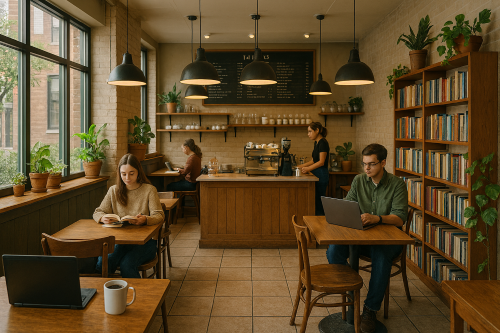

For the first time in the Central Valley A local business with real coffee
| Origen | Rosted |
|---|---|
| Colombian Supremo | Balanced and smooth with notes of caramel, red berries, and a hint of cocoa. |
| Guatemalan Antigua | Bright acidity with chocolate undertones, floral aroma, and hints of spice. |
| Brazilian Santos | Low acidity, nutty and sweet with notes of toasted almond and milk chocolate. |
| Costa Rican Tarrazú | Clean and crisp with citrus notes, honey sweetness, and a silky body. |
“Best coffee in the Valley! Friendly staff and cozy vibes.” – Ana G.
“Finally, a place that takes coffee seriously.” – Luis M.
Contact us:
marisolneria20@gmail.com